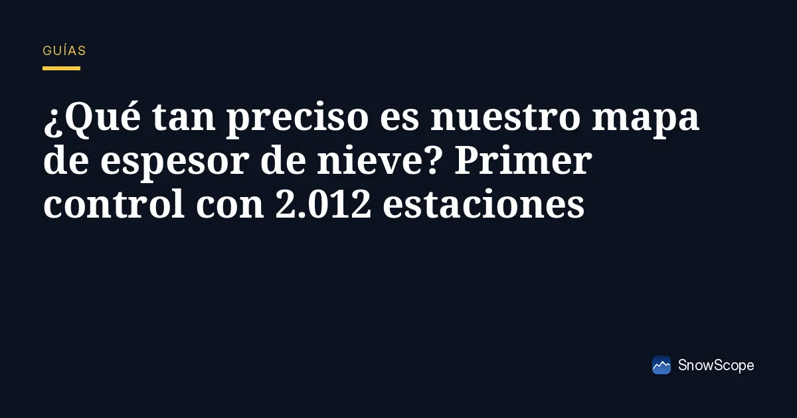

¿Qué tan preciso es nuestro mapa de espesor de nieve? Primer control con 2.012 estaciones
Un mapa de nieve solo ayuda a los esquiadores si los números son honestos. Ahora comprobamos el nuestro cada día contra mediciones reales de estaciones en los Alpes, Pirineos y América del Norte, y publicamos los resultados. Esta es la primera puntuación del 9 de noviembre de 2026.
Consulta la previsión de nieve en tiempo real de Alps en la app SnowScopeEspesor de nieve, alertas de nieve polvo y mapa 3D, gratis.
Precisión general: la primera tarjeta de puntuación
El 9 de noviembre, SnowScope comparó su mapa con 2.012 estaciones que informaron sobre la profundidad de nieve (los datos vinieron de 2.516 estaciones en 16 redes). El mapa fue 0,5 cm demasiado superficial en promedio. El error típico fue de 7,7 cm, y el mapa mostró correctamente nieve o sin nieve (5 cm o más) el 88% de las veces.
Principios de noviembre facilita algunas cosas: muchas estaciones de montaña aún no tienen nieve, y el mapa está de acuerdo. Pero en 780 estaciones donde la estación o el mapa mostraban nieve, la historia fue más difícil. El error típico allí fue de 12,4 cm, con el mapa 1,3 cm demasiado superficial y cada sitio variando aproximadamente 3,3 cm del pronóstico.
Tres regiones, tres historias
El oeste de EE.UU. (1.063 estaciones SNOTEL y similares) fue la mejor concordancia: 0,1 cm de sesgo, 4,6 cm de error típico, 89% de concordancia en nieve o sin nieve. Los Alpes (917 estaciones) tenían un sesgo de 1,1 cm superficial y 10,3 cm de error típico, con 86% de concordancia. Los Pirineos aún son pequeños: solo 14 estaciones que reportan hasta ahora, con un error típico de 3,0 cm.
Un sitio en los Alpes sesga los números: un glaciar a 3.499 m midió 320 cm mientras el mapa muestra 28 cm. Los glaciares retienen nieve vieja y hielo que un mapa de esquí estacional debe ignorar, así que marcamos estos valores atípicos en lugar de perseguirlos en el pronóstico.
Dónde el mapa aún tiene dificultades
La nieve fina de principios de temporada es difícil. Cuando una estación midió nieve, el mapa encontró nieve solo el 61% de las veces. Cuando el mapa decía nieve, el 23% de esas estaciones no reportó ninguna. Unos pocos centímetros dispersos en una ladera a resolución de 500 m es el primer problema que estamos solucionando.
Las tormentas cálidas también nos sorprendieron esta semana. Nuestro mapa estaba convirtiendo lluvia en nieve cuando el aire era demasiado cálido para congelarla. El 12 de noviembre en los Alpes meridionales a 2.300 m, ese error significó pronosticar 2,7 cm de nieve nueva cuando la realidad fue 0,1 cm. La buena noticia: la nieve nueva en 24 horas ya puntúa bien, con un error típico de solo 1,0 cm en 1.890 estaciones.
Por qué estos números importan—y sus límites
Esta comprobación te dice qué tan bien el mapa terminado se ajusta a las mediciones, no una prueba independiente. Las mismas estaciones ayudan a construir el mapa, así que es una comprobación de ajuste final, no un pronóstico ciego. Estamos planeando una prueba separada usando estaciones reservadas.
Una sola estación muestra un punto; el mapa promedia cuadrados de cuadrícula de 500 m. La nieve varía bruscamente en unos pocos cientos de metros debido al viento, la protección del bosque y la exposición al sol. Esa brecha entre punto y área es real, no un error que podamos solucionar. Estamos trabajando en una cuadrícula de 100 m para reducirla, y añadiremos un 'rango probable' para que sepas cuándo el mapa tiene menos certeza.
Qué verás a continuación
Esta comprobación ahora se ejecuta dos veces al día y mantiene un historial, así que verás los números cambiar durante toda la temporada de invierno. Para primavera verás cómo el mapa se comporta en nieve profunda, terreno empinado y cambios de tiempo.
Próximamente: un mapa de resolución más nítida de 100 m, más estaciones en España y Noruega, una regla más inteligente para nieve fina y dispersa en elevaciones bajas, y un rango de pronóstico alrededor de cada valor de profundidad para que sepas qué tan seguro es el mapa.
Consejos para esquiadores
- Usa el mapa para comparar diferentes pendientes y altitudes en tu estación en lugar de confiar en un solo punto. Compruébalo contra el parte de nieve de la estación antes de ir.
- Activa la capa 'Nieve medida' en la app para ver dónde están las estaciones reales y cómo se comparan con el mapa a tu alrededor.
- Al principio de la temporada, cree primero en las pendientes altas orientadas al norte. Espera nieve fina o dispersa en altitudes bajas, especialmente en valles y en terreno orientado al sur.
Sobre estas cifras
Los espesores de nieve de las estaciones son la nieve más profunda en las pistas altas en la fecha indicada; son estimaciones para una zona, no una medida en un punto. Las previsiones pueden cambiar. Consulta siempre el boletín oficial de aludes antes de salir fuera de pista.
Citar este informe
Para investigación, docencia o prensa: cifras y gráficos reutilizables libremente bajo CC BY 4.0 con esta cita.
SnowScope (2026), ¿Qué tan preciso es nuestro mapa de espesor de nieve? Primer control con 2.012 estaciones, https://snowscope.app/blog/es/2026/11/how-accurate-is-our-snow-depth-map-november-2026.html, consultado el 2026-11-09
SnowScope (Atlas Labs). (2026, November 9). ¿Qué tan preciso es nuestro mapa de espesor de nieve? Primer control con 2.012 estaciones. SnowScope snow reports. https://snowscope.app/blog/es/2026/11/how-accurate-is-our-snow-depth-map-november-2026.html
BibTeX
@misc{snowscope2026howaccurateisoursnowdept,
author = {{SnowScope (Atlas Labs)}},
title = {¿Qué tan preciso es nuestro mapa de espesor de nieve? Primer control con 2.012 estaciones},
year = {2026},
month = nov,
howpublished = {\url{https://snowscope.app/blog/es/2026/11/how-accurate-is-our-snow-depth-map-november-2026.html}},
note = {Published 2026-11-09 19:55 UTC; accessed 2026-11-09}
}· CC BY 4.0 · Métodos, datos y herramientas →
Sigue Alps
Gratis: un aviso cuando llega la nieve y la previsión cada mañana.